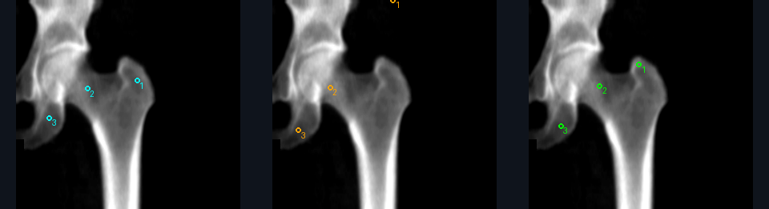
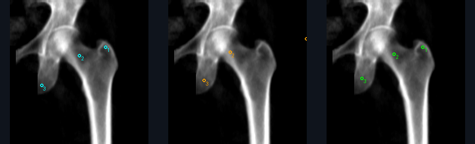
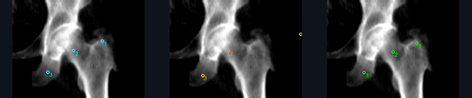
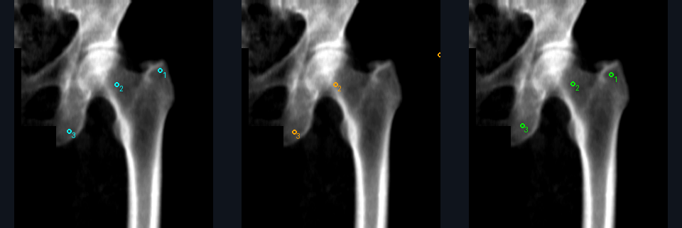
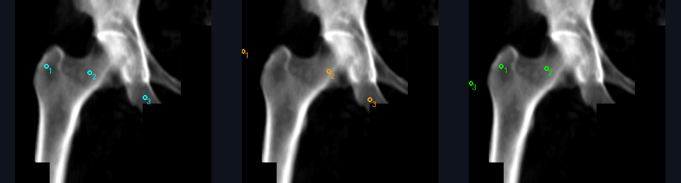

Успехи и ошибки каждого модуля; номера для ручной проверки
Первоначальный отчёт · Полные агрегированные метрики
| Часть | Снимки | Исследования | Позвоночник | Артефакты | Доля |
|---|---|---|---|---|---|
| train | 318 | 65 | 106 | 14 | 0.132 |
| validation | 81 | 16 | 25 | 4 | 0.160 |
| test | 100 | 19 | 35 | 19 | 0.543 |
Исследования и точные пиксельные дубли между частями не пересекаются. Train и внутренняя validation используются для обучения и выбора. Прежние 100 контрольных снимков сохранены для сравнения; их уже изучали, поэтому это не новый независимый test. В этой контрольной выборке доля артефактов остаётся высокой. Маршрутизатор (router) взят из предыдущего запуска; остальные три модуля обучены заново.
| Вариант | Средняя ошибка, мм | Доля точек в пределах 10 мм |
|---|---|---|
| Старые веса / старый декодер | 25.802 | 0.354 |
| Старые веса / максимум внутри кадра | 29.187 | 0.385 |
| shared256 / эпоха 8 | 11.733 | 0.595 |
| coordinate256 / эпоха 18 | 11.967 | 0.421 |
В рабочий пайплайн выбран shared256, эпоха 8, только по внутренней validation. Из каждой модели дополнительно сравнивались сохранённые best и last с рабочим декодером. На 65 исходных контрольных снимках бедра все три точки видны: чувствительность и ROC AUC позиционирования на них не определены. Миллиметры рассчитаны при номинальном масштабе 1,05 × 0,6 мм; это ограничение физической точности.
| Область | Проверка | F1 раньше | F1 сейчас | 95% CI F1 | AUC раньше | AUC сейчас | Чувствительность | Специфичность | Покрытие раньше | Покрытие сейчас | N |
|---|---|---|---|---|---|---|---|---|---|---|---|
| Позвоночник | Укладка позвоночника | 0.500 | 0.296 | 0.000–0.700 | 0.917 | 0.420 | 1.000 | 0.240 | 0.800 | 0.829 | 29 |
| Позвоночник | Наклон позвоночника | 0.000 | 0.000 | 0.000–0.000 | 0.500 | 0.576 | 0.000 | 0.697 | 1.000 | 0.971 | 34 |
| Позвоночник | Артефакты | 0.941 | 0.875 | 0.250–1.000 | 0.941 | 0.938 | 0.778 | 1.000 | 1.000 | 1.000 | 35 |
| Левое бедро | Позиционирование бедра | 0.000 | 0.000 | 0.000–0.000 | — | — | — | 0.906 | 0.970 | 0.970 | 32 |
| Левое бедро | Отступы ROI | 1.000 | 0.400 | 0.400–0.400 | 1.000 | 1.000 | 1.000 | 0.903 | 0.970 | 0.970 | 32 |
| Левое бедро | Ротация бедра | 0.667 | 0.400 | 0.000–1.000 | 0.750 | 0.750 | 0.250 | 1.000 | 0.970 | 0.970 | 32 |
| Правое бедро | Позиционирование бедра | 0.000 | 0.000 | 0.000–0.000 | — | — | — | 0.867 | 0.938 | 0.938 | 30 |
| Правое бедро | Отступы ROI | 1.000 | 1.000 | 1.000–1.000 | 1.000 | 1.000 | 1.000 | 1.000 | 1.000 | 1.000 | 30 |
| Правое бедро | Ротация бедра | 0.000 | 0.000 | 0.000–0.000 | 0.380 | 0.380 | 0.000 | 0.840 | 1.000 | 1.000 | 30 |
| Показатель | Раньше | Сейчас |
|---|---|---|
| F1: любое нарушение | 0.534 | 0.722 |
| ROC AUC: любое нарушение | 0.886 | 0.827 |
| Покрытие: любое нарушение | 0.900 | 0.900 |
| Успешно обработанные файлы | 100 | 100 |
| Macro-F1 маршрутизации | 0.969 | 0.969 |
F1 отражает баланс точности обнаружения нарушений и чувствительности; больше — лучше. ROC AUC оценивает ранжирование по непрерывному score, а не точность бинарного ответа на выбранном пороге. Чувствительность — доля обнаруженных нарушений, специфичность — доля качественных снимков без ложной тревоги. Покрытие — доля случаев, в которых правило смогло вернуть определённый ответ; пропуски исключены из F1 и не считаются правильными. Сравнивайте F1 вместе с покрытием. 95% CI получены bootstrap по исходным исследованиям; малое число исследований даёт широкие интервалы. Балансированная точность, PR AUC и матрицы ошибок находятся в JSON.
| Область | Проверка | F1 раньше | F1 сейчас | 95% CI F1 | AUC раньше | AUC сейчас | Чувствительность | Специфичность | Покрытие раньше | Покрытие сейчас | N |
|---|---|---|---|---|---|---|---|---|---|---|---|
| Позвоночник | Укладка позвоночника | 0.984 | 0.896 | 0.620–0.951 | 1.000 | 0.762 | 1.000 | 0.462 | 0.933 | 0.956 | 43 |
| Позвоночник | Наклон позвоночника | 1.000 | 0.846 | 0.667–1.000 | 1.000 | 0.919 | 1.000 | 0.852 | 0.956 | 0.844 | 38 |
| Позвоночник | Артефакты | 0.235 | 0.333 | 0.000–1.000 | 0.633 | 0.750 | 0.200 | 1.000 | 1.000 | 1.000 | 45 |
| Левое бедро | Позиционирование бедра | 0.481 | 0.897 | 0.544–0.984 | 1.000 | 0.950 | 1.000 | 0.900 | 0.956 | 0.956 | 43 |
| Левое бедро | Отступы ROI | 0.980 | 0.851 | 0.533–0.960 | 1.000 | 0.968 | 0.769 | 0.941 | 0.956 | 0.956 | 43 |
| Левое бедро | Ротация бедра | 0.857 | 0.400 | 0.000–1.000 | 0.875 | 0.750 | 0.250 | 1.000 | 0.956 | 0.956 | 43 |
| Правое бедро | Позиционирование бедра | 0.453 | 0.800 | 0.555–1.000 | 1.000 | 0.900 | 1.000 | 0.800 | 0.933 | 0.933 | 42 |
| Правое бедро | Отступы ROI | 0.943 | 0.941 | 0.875–1.000 | 0.968 | 1.000 | 0.889 | 1.000 | 0.933 | 0.933 | 42 |
| Правое бедро | Ротация бедра | 0.348 | 0.111 | 0.000–0.154 | 0.614 | 0.548 | 0.059 | 1.000 | 0.977 | 0.977 | 42 |
135 синтетических изображений, без пересечения с обучающими исследованиями. Здесь появляются пропавшие точки и нарушенные отступы. Это проверка заданных преобразований, её нельзя выдавать за диагностическое качество на реальных нарушениях.
| Вариант | Бедро | F1 позиции | Чувствительность | Специфичность | ROC AUC | Покрытие |
|---|---|---|---|---|---|---|
| shared256 | Левое бедро | 0.897 | 1.000 | 0.900 | 0.950 | 0.956 |
| shared256 | Правое бедро | 0.800 | 1.000 | 0.800 | 0.900 | 0.933 |
| coordinate256 | Левое бедро | 0.963 | 1.000 | 0.967 | 0.983 | 0.956 |
| coordinate256 | Правое бедро | 1.000 | 1.000 | 1.000 | 1.000 | 0.933 |
Все остальные веса, источники и преобразования одинаковы. Это диагностическое сравнение после внутреннего отбора; выбранная основная модель не меняется по результатам контрольной выборки.
| Метрика | Раньше | Сейчас |
|---|---|---|
| Средний IoU ROI | 0.917 | 0.828 |
| Dice маски малого вертела | 0.771 | 0.779 |
| IoU маски малого вертела | 0.628 | 0.638 |
| Ошибка подвздошных точек, мм | 12.922 | 26.069 |
| Recall рамок артефактов, IoU ≥ 0,5 | 0.394 | 0.379 |
| Precision рамок артефактов, IoU ≥ 0,5 | 0.897 | 0.962 |
Только исходные снимки, направленные в верную ветку. Dice и IoU ближе к 1 означают лучшее совпадение масок/прямоугольников; ошибка точек меньше — лучше. Mask Dice/IoU здесь посчитаны по сумме пикселей на исходном разрешении, без искусственной оценки 1 для пустых масок. Эталон маски вертела получен из ручных контуров, поэтому ошибки построения эталона ограничивают интерпретацию. F1 наличия артефакта может быть высоким даже при плохой локализации его рамки.
| Модуль | Эпох выполнено | Выбранная эпоха | Минуты |
|---|---|---|---|
| spine | 20 | 17 | 7.5 |
| hip | 19 | 14 | 14.7 |
| artifact | 7 | 2 | 4.3 |
| shared256 | 15 | отбор best/last на внутренней validation | 11.8 |
| coordinate256 | 20 | отбор best/last на внутренней validation | 15.9 |
GPU: RTX 5060 Ti. Средний полный инференс сейчас 0.118 с на файл после прогрева. Старое измерение частично включало холодный запуск: напрямую сравнивать ускорение нельзя.
Слева ручная разметка (голубой), в центре прежняя модель (оранжевый), справа новая (зелёный). Примеры выбраны по квантилям изменения ошибки, включая ухудшения.





Координатный loss оказался лучше для бинарного позиционирования на контрольных аугментациях: F1 слева 0.897 → 0.963, справа 0.800 → 1.000, хотя точность координат/PCK у него хуже. Это показывает различие целей локализации и итоговой классификации. Следующий отбор по F1 следует провести на аугментациях внутренней validation, прежде чем менять основной вариант.